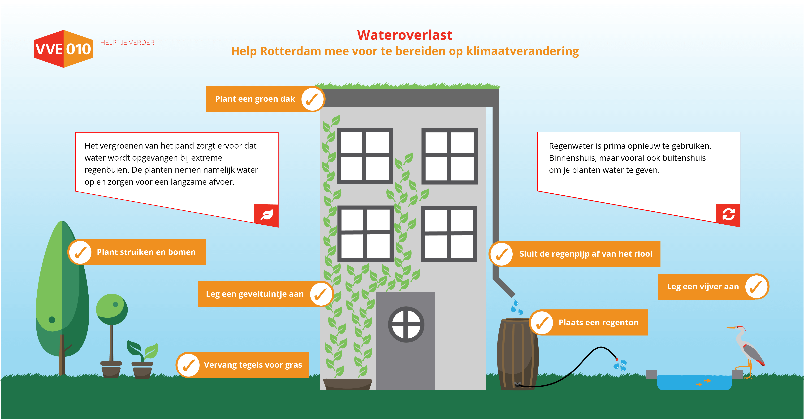
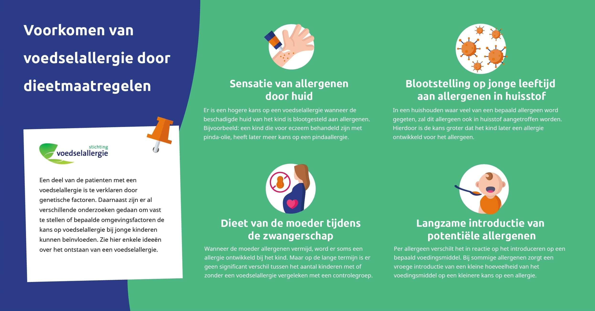

Mijn werk
Mijn werkOverig werk

Infographics

Veel websites zijn beladen aan tekst, maar lange lappen tekst zijn niet te lezen en minder leuk om naar te kijken. Pagina’s die veel bezocht worden, maar waar mensen snel weer afhaken bij het zien van de lange tekst is niet de bedoeling. Een oplossing die ik vaak toe pas is het maken van een infographic en deze op de website plaatsen. De informatie op de pagina wordt zo visueel aantrekkelijk, kort en krachtig en in een oogopslag duidelijk is. Het doel van de infographic is uiteindelijk dat het de sessie duur op de website verlengt, de informatie laagdrempelig overbrengt voor de laaggeletterden, mensen uitnodigt om verder te lezen en mensen bij haast snel kan informeren.

